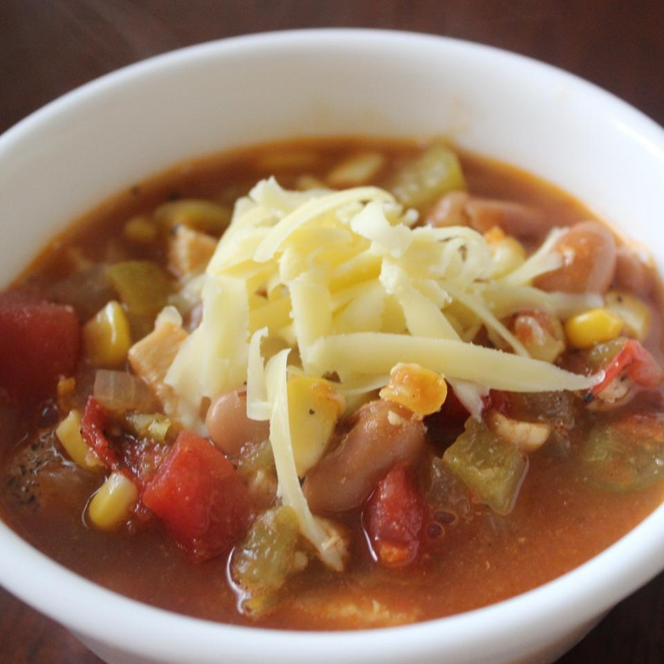

Chicken and beans

Recipe
Description
When I was a young boy in Colombia my abuela used to feed me this all the time.
And now that she's off fighting the government I have learned this recipe and
have decided to share it with you guys. It has chicken and beans and stuff, muy rica para todos!
Ingredients
- 2 tablespoons vegetable oil
- 1 onion, chopped
- 2 cloves garlic, minced
- 1 (14.5 ounce) can chicken broth
- 1 (18.75 ounce) can tomatillos, drained and chopped
- 1 (16 ounce) can diced tomatoes
- 1 (7 ounce) can diced green chiles
- ½ teaspoon dried oregano
- ½ teaspoon ground coriander seed
- ¼ teaspoon ground cumin
- 2 ears fresh corn
- 1 pound diced, cooked chicken meat
- 1 (15 ounce) can white beans
- 1 pinch salt and black pepper to taste
Steps
- Heat oil, and cook onion and garlic until soft.
- Stir in broth, tomatillos, tomatoes, chilies, and spices.
Bring to a boil, then simmer for 10 minutes.
- Add corn, chicken, and beans; simmer 5 minutes.
Season with salt and pepper to taste.